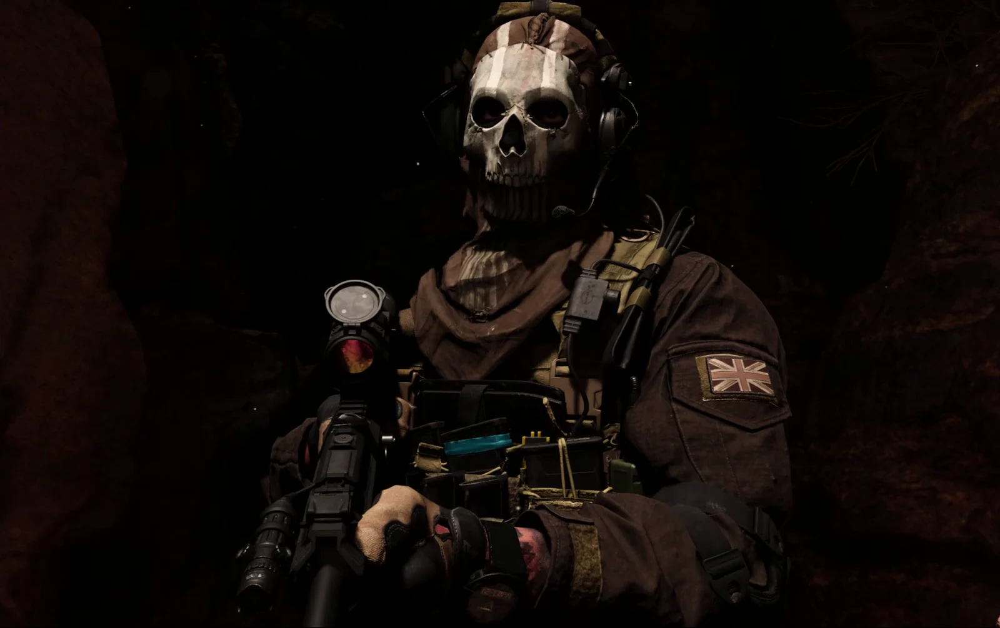

Ocean’s Scenepacks
Quality
Plain MP4 files. Scene packs and cutscenes come in three sizes: pick the one your editor and device can handle.

4K 2K 1080p- 4K3840 × 1634 · for editing in 4K
- 2K2560 × 1088 · the middle ground
- 1080p1920 × 816 · lightest, for phones
What each pack comes in
- Scene packs, MW to MW IIIPrice, Gaz, Ghost, Soap, Farah, Graves · Raid Atomgrad · Shadow Siege
4K · 2K · 1080p · 30 fps
- Scene packs, MW4Price, Gaz, Ghost · Price is in two files
4K · 2K · 1080p · 60 fps
- Cutscenes, MW to MW IIIOne file per scene · 4K not re-encoded
4K · 2K · 1080p · 30 fps
- Cutscenes, MW422 scenes and the recap · 4K not re-encoded
4K · 2K · 1080p · 30–60 fps
- Whole campaignsOne file per game · 4–6 GB · on Google Drive
4K · 30 fps
- Trailers10 official trailers, MW to MW4
4K · 24–60 fps
- More clipsGaz and Soap · full 16:9 frame
3840 × 2160 · 60 fps
- MW4 gameplayCharacter scenes and more · Makarov Chase is in two files
2560 × 1440 · 60 fps
- SIX, Joe GravesSeasons 1 and 2 · cut from the Blu-ray
1920 × 1080 · 24 fps
Every file is an MP4 with H.264 video. Files on GitHub are under 2 GB; the preview plays the size you pick.